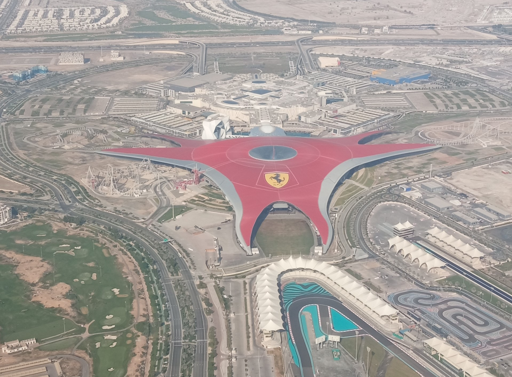
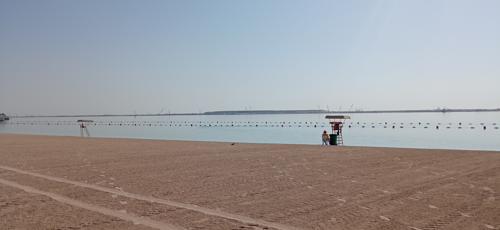

Абу-Даби. Столица Объединенных Арабских Эмиратов и одноименного эмирата. Какие места стоит посетить:
- Sheikh Zaida Mosque. Самая большая мечеть в эмиратах

- Ferrari World. Парк развлечения в стиле одноименных гонок. На одном из аттрационов развивается
скорость 260 км/ч за 3 секунды

- Capital Gate Tower. Наклон у этой башни в 10 раз больше чем у знаменитой Пизанской падающей
башни.
- Al Bahar Towers. Эти 2 башни являются высокотехнологичными системами, которые имеют чешуйки
защищающие от солнца. Чешуйки меняют свое положение по мере движения солнца.
Абу-Даби не является туристическим городом в полной мере, это больше рабочий город. Здесь много офисов
компаний.
Город находится на берегу персидского залива вода в котором теплая и соленая.
Однако город может предложить и места для пляжного отдыха:
- Corniche Beach. Прекрасно обустроенная набеженая протяженностью около 10 км.
- Al Bateen Beach. Чистый пляж с небольшим количество посетителей.

Ну и на последок фото прекрасного заката: